This lab will demonstrate how to use MO to prepare a flow and heat transfer simulation of the developing of the Rayleigh-Benard phenomena.
1.2. Adding 2D Forming operation
On a Windows machine, go to the  button select DEFORM-v1x.xxx (.xxx indicates version number E.g. v14.0.2) and select DEFORM
GUI Main vx.x. from the menu. The DEFORM GUI Main window will appear.
button select DEFORM-v1x.xxx (.xxx indicates version number E.g. v14.0.2) and select DEFORM
GUI Main vx.x. from the menu. The DEFORM GUI Main window will appear.
Create a new problem either by selecting File  New Problem or by clicking the New Problem
New Problem or by clicking the New Problem  icon. The Problem Setup window will appear as shown in Fig. 2DRBCL.1. Select " Integrated Manufacturing Process" radio
button and units system as "SI" radio button in units field. Define Problem Name as "2D_Rayleigh_Benard" and make sure the “Show option dialog” check box is turned
on (if we do not turn on the “Show option dialog” check box, then we will not get the New Project dialog in MO UI). Then click on
icon. The Problem Setup window will appear as shown in Fig. 2DRBCL.1. Select " Integrated Manufacturing Process" radio
button and units system as "SI" radio button in units field. Define Problem Name as "2D_Rayleigh_Benard" and make sure the “Show option dialog” check box is turned
on (if we do not turn on the “Show option dialog” check box, then we will not get the New Project dialog in MO UI). Then click on  button to
open a new Problem using the Deform Integrated Manufacturing Process.
button to
open a new Problem using the Deform Integrated Manufacturing Process.
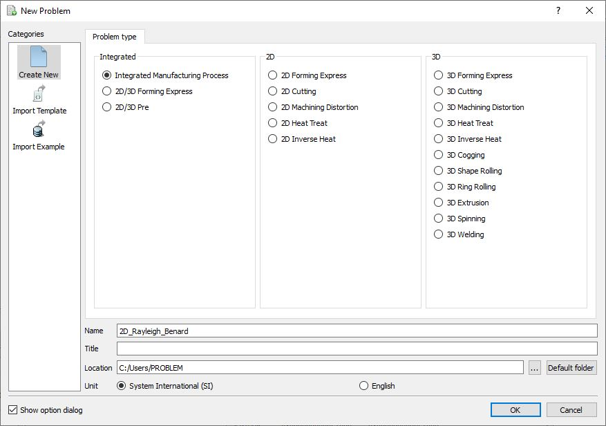
Problem type selection window
Multiple operation wizard will open with the New Project dialog, at this point user will be prompted to specify a project name (system will create a separate folder with this project name) and title for this session. In this session we use ‘2D_Rayleigh_Benard’
as the project name. Click on  to continue to open the operation.
to continue to open the operation.
Add one 2D Forming operation from the Explorer Operations list. Operation can be added by clicking on 2D Forming operation  button or user can also add by drag and drop into the
Operation Editor (See Fig. 2DRBCL.2.).
button or user can also add by drag and drop into the
Operation Editor (See Fig. 2DRBCL.2.).
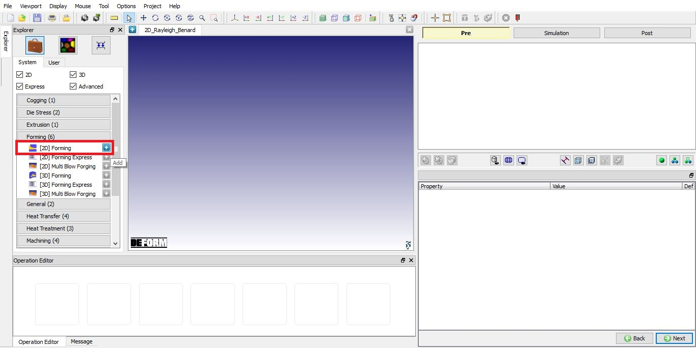
Adding 2D Forming Operation
Choose '2D Plane strain' on ‘Geometry type’ for this problem, see Fig. 2DRBCL.3. Then click 
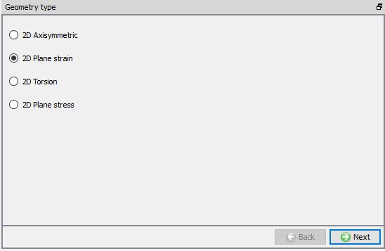
Geometry type page
Turn ON ‘Heat transfer’ and ‘CFD flow’ options and uncheck ‘Deformation’ as shown in Fig. 2DRBCL.4. then
click on  .
.
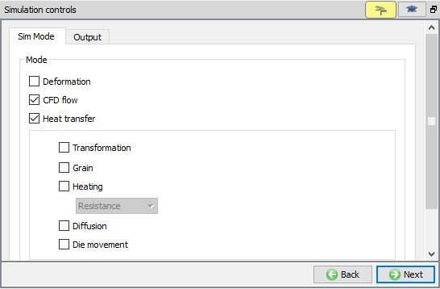
Simulation controls page
On ‘Material list’ page, click on  to add a new material. Double click on the new material name tag, change the material’s name to ‘Water’
(See Fig. 2DRBCL.5.). Click
to add a new material. Double click on the new material name tag, change the material’s name to ‘Water’
(See Fig. 2DRBCL.5.). Click  to material page to edit the material parameters.
to material page to edit the material parameters.
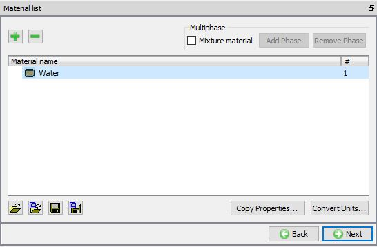
Material List page
First, click on ‘Elastic’ tag, then type the following values as shown in Fig. 2DRBCL.6. for elastic parameters.
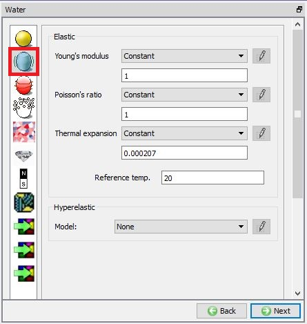
Elastic Material page
Click on ‘Thermal’ tag, then type the values as shown in Fig. 2DRBCL.7. for thermal/flow material data.
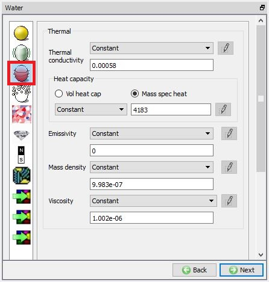
Thermal Material page
This lab only needs one object, so on ‘Object’ list page, removes all objects except ‘Workpiece’ (see Fig. 2DRBCL.8.),
then click on  .
.
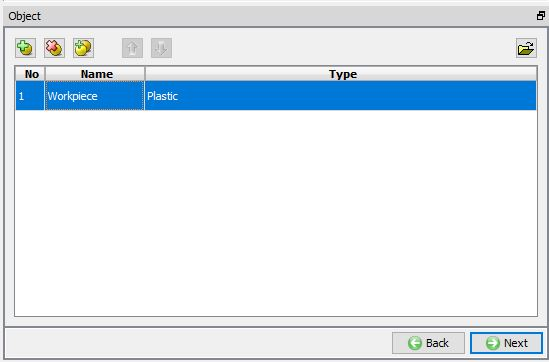
Object list page
Choose ‘Environment - Fluid(CFD)’ as object type with Object temperature as 20°C as shown in Fig. 2DRBCL.9. Then click on  .
.
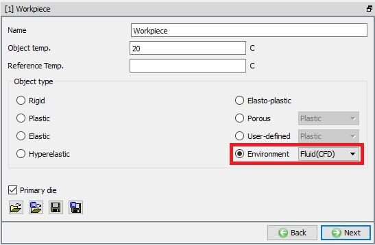
Workpiece page
On 'Geometry' page, click on  , on the following page choose 'Bar', and give 60 as width, and 10 as height, Origin X: as
0 and Y: as 0 as shown in Fig. 2DRBCL.10., the object geometry is also previewed at the
central graphic window area. Click on
, on the following page choose 'Bar', and give 60 as width, and 10 as height, Origin X: as
0 and Y: as 0 as shown in Fig. 2DRBCL.10., the object geometry is also previewed at the
central graphic window area. Click on  button to accept all the changes, and it will come back to the 'Geometry' definition, click on
button to accept all the changes, and it will come back to the 'Geometry' definition, click on  to the 'Mesh' page.
to the 'Mesh' page.
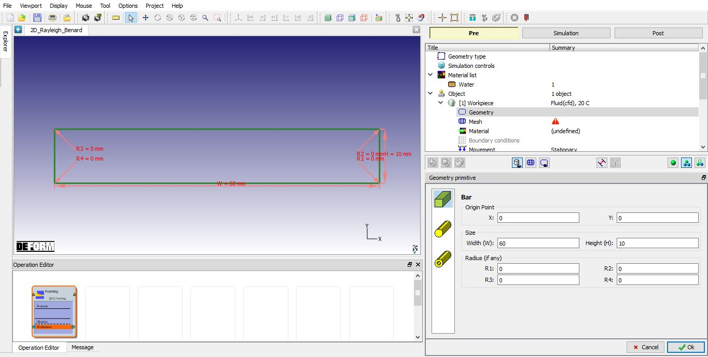
Geometry primitive to create the part
Click on Expert mode  , Put 3000 in 'Number of Elements', check ‘Mapped mesh generation’ check box and type 24 in ‘Thickness element’ then
click on
, Put 3000 in 'Number of Elements', check ‘Mapped mesh generation’ check box and type 24 in ‘Thickness element’ then
click on  . The mouse icon on the screen turns to busy and then back to normal, which indicating the mesh has been generated, the results are also plotted on the central graphic area,
see Fig. 2DRBCL.11. Click on
. The mouse icon on the screen turns to busy and then back to normal, which indicating the mesh has been generated, the results are also plotted on the central graphic area,
see Fig. 2DRBCL.11. Click on  go to the 'Material'
page.
go to the 'Material'
page.
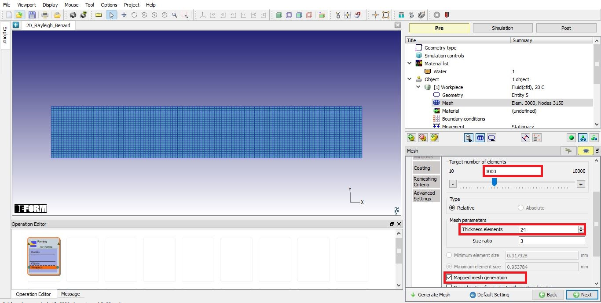
Mesh generation
In object 'Material' selection page, (see Fig. 2DRBCL.12.) it shows the material name that has been added to the project. Select
'Water' for the workpiece, then click  to BCC page.
to BCC page.
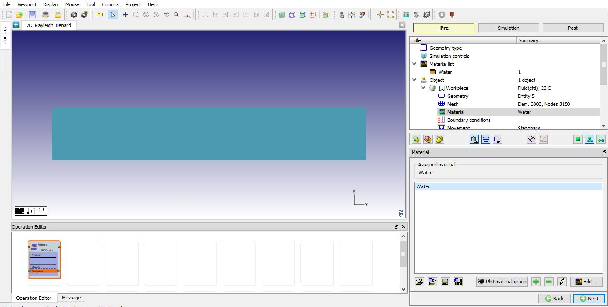
Material assignment page
For this lab, only the temperature bcc needs to be specified on top and bottom surface respectively. So, delete the default assigned 'Heat Exchange with environment ' BCC and then assign Temperature BCC for Bottom surface with 20.5 as shown in Fig. 2DRBCL.13. and for Top surface with 20 as shown in Fig. 2DRBCL.14.
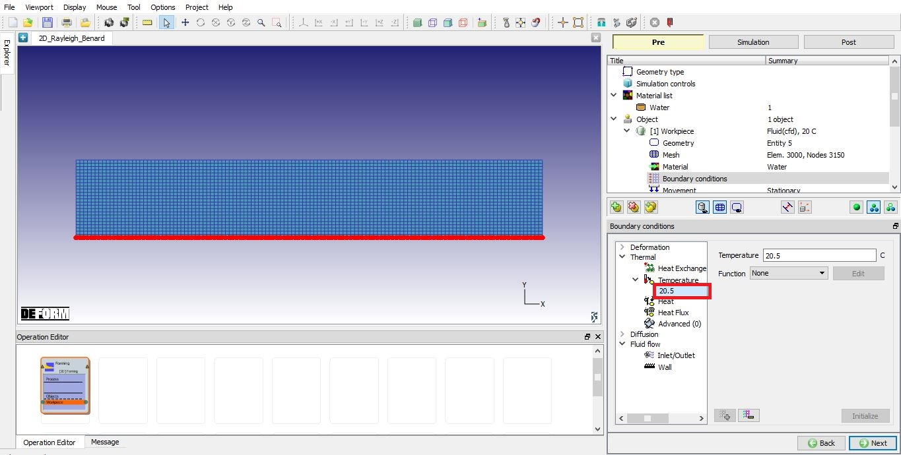
Temperature BCC assigned for Bottom surface with 20.5C
Temperature BCC assigned for Top surface with 20C
Define Wall BCC
The entire surface needs to be fixed all directions for this simulation. Assign Velocity BCC for all surface in all directions as shown in Fig. 2DRBCL.15. Click  to Object properties to enable gravity.
to Object properties to enable gravity.
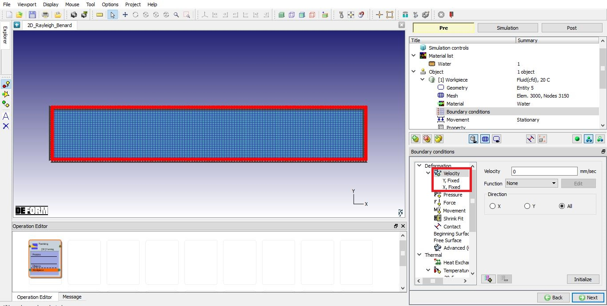
Assigned Velocity BCC for all surface in all directions
Gravity is needed for this lab, on ‘Property’ page, click on ‘Body forces’, and check ‘Enable gravity’ check box. Then type 9820, and choose ‘-Y’
as direction as shown in Fig. 2DRBCL.16. Click on  until ‘Step’ page, to define simulation control.
until ‘Step’ page, to define simulation control.
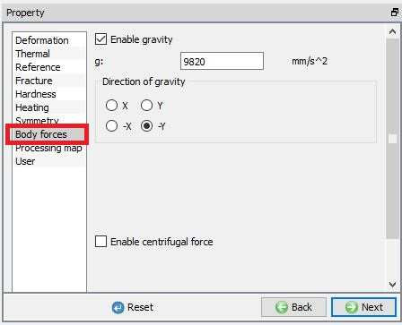
Wall BCC assignment
Click on Guided mode  , enter Number of steps as 200, and ‘Time’ of step increment as 2. (see Fig. 2DRBCL.17.)
, enter Number of steps as 200, and ‘Time’ of step increment as 2. (see Fig. 2DRBCL.17.)
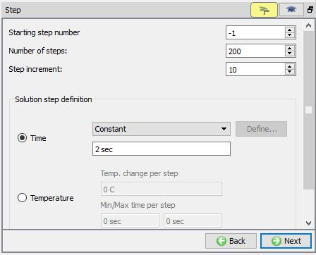
Step page
On 'Generate DB' page, click on  , database has been successfully generated.
, database has been successfully generated.
Once the database has been generated, switch to the Simulation mode by clicking on  button above the operation tree. Click on the
button above the operation tree. Click on the  action label to open the Run Options dialog as shown in Fig. 2DRBCL.18. Use the default Continue Run option to select “Continue from the last step”
(from step -1) option and then select the Simulation mode as Interactive and click on
action label to open the Run Options dialog as shown in Fig. 2DRBCL.18. Use the default Continue Run option to select “Continue from the last step”
(from step -1) option and then select the Simulation mode as Interactive and click on  button to run the simulation.
button to run the simulation.
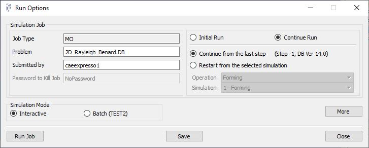
Run Simulation
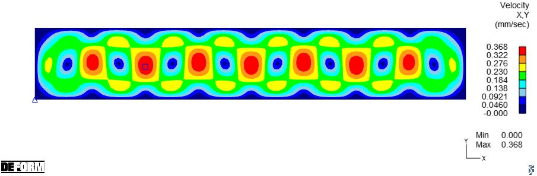
Velocity profile at last step
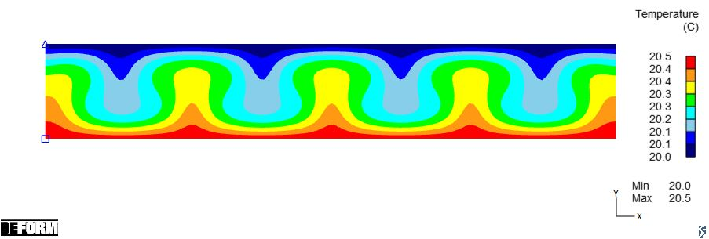
Temperature profile at last step
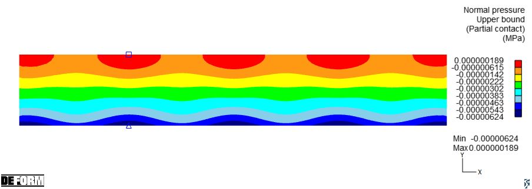
Pressure profile at last step